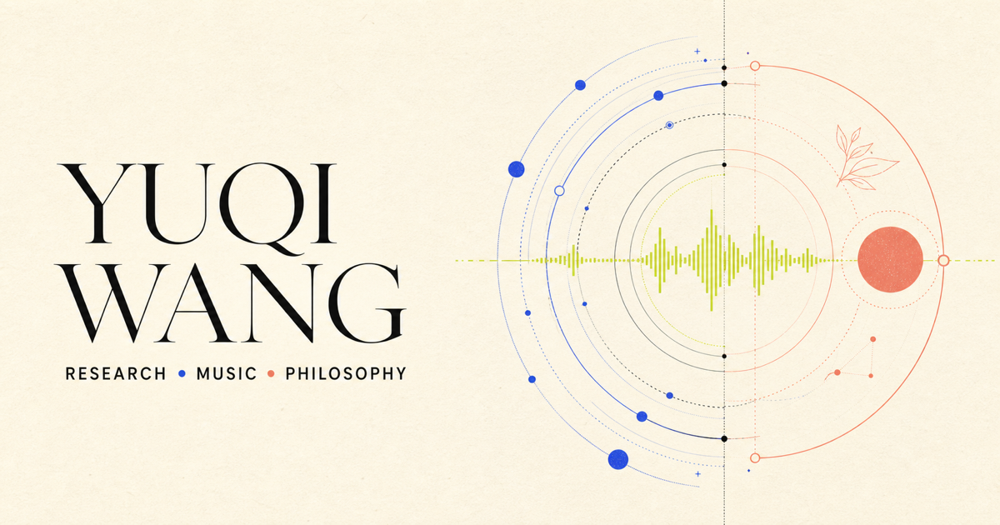

Unicorn: Controllable Multi-Shot Video Editing Framework via Shot-wise Keyframe Anchors
Yuqi Wang et al.
Yuqi Wang et al.

Yuqi Wang et al.
Paper
Yuqi Wang et al.
PaperAIGC Algorithm Intern / Commercial Technology, Safety & Ecosystem
Researching controllable multi-shot video editing and building MultiShotBench.
AIGC Algorithm Intern / Digital Human & Creative Generation
Built image composition and automatic video editing systems serving 1,000+ videos daily.
I’m a master’s student in Software Engineering at Beihang University, advised by Prof. Jianwei Niu in the LDMC Lab. I work on diffusion, multimodal models, and reinforcement learning for visual generation.
Beihang University / LDMC Lab
Beihang University / Outstanding Graduate

Music, production, and sampling.
Mind. Freedom. Meaning. Action.
应无所住，
而生其心